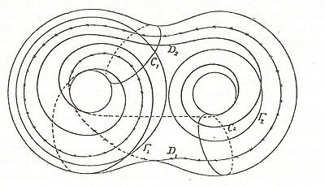

4. Teoremas Clave
La correspondencia biunívoca entre sistemas de rotación y encajes
Recordamos que dos encajes de grafos \(G_1 \subset S_1\) y \(G_2 \subset S_2\) son equivalentes si existe un homeomorfismo que preserva la orientación \(h: S_1 \to S_2\) tal que \(h(G_1) = G_2\). Esto implica que \(h\) induce un isomorfismo entre los grafos abstractos subyacentes.
Además vimos que la Realización topológica (sección 2) proporciona una función explícita:
\[ \begin{aligned} \text{Mapas Combinatorios} \quad &\rightarrow \quad \text{Ribbon graphs} \\ (D,\sigma, \rho) \quad &\mapsto \quad (G,\iota) \end{aligned} \]
Ahora veamos que la inversa de esta asignación está bien definida, salvo reetiquetado de dardos.
La esquematización de un grafo encajado
Dado un grafo ya encajado en una superficie, se puede “leer” el encaje recorriendo las fronteras de las caras para obtener su mapa combinatorio. Esta es la dirección que se usa para analizar un mapa ya existente.
Para ello, como vimos en la sección 1, se subdivide cada arista del grafo encajado para crear un par de semiaristas (dardos) y se etiquetan. Luego:
- En cada vértice, la orientación de la superficie induce un orden cíclico único de los dardos incidentes. La colección de estos ciclos disjuntos define la permutación
σ(sigma). - Cada arista original corresponde a un par de dardos. La colección de estas parejas (transposiciones) define la permutación
ρ(rho).
El par (σ, ρ) es el mapa combinatorio o esquema asociado al encaje.
Ejemplo
Consideremos el siguiente grafo encajado en el toro.
Después de cortarlo alrededor de un meridiano y una longitud fijas, obtenemos su cuadrado fundamental:

Del diagrama con identificaciones ahora se ve claro que el sistema de rotación asociado es: \[ \begin{aligned} \sigma&=(1234)(5678)(9\,10\,11\,12) \\ \rho &= (1\,7)(2\,8)(3\,9)(4\,10)(5\,11)(6\,12) \end{aligned} \]
Este es un sistema de rotación válido y podemos verificar en SageMathCell que en efecto produce un encaje en el toro con el siguiente código mínimo:
sigma = "(1,2,3,4)(5,6,7,8)(9,10,11,12)"
rho = "(1,7)(2,8)(3,9)(4,10)(5,11)(6,12)"
def verifica_toro(sigma, rho):
if isinstance(sigma, str): sigma = PermutationGroupElement(sigma)
if isinstance(rho, str): rho = PermutationGroupElement(rho)
R = RibbonGraph(sigma, rho)
phi = rho * sigma
V = len(sigma.cycle_tuples(singletons=True))
E = len(rho.cycle_tuples(singletons=True))
F = len(phi.cycle_tuples(singletons=True))
chi = V - E + F
g = R.genus()
b = R.number_boundaries()
print(f"V={V}, E={E}, F={F}, χ={chi}, b={b}, g={g}")
print("Encaje en el toro (al cerrar las caras)." if g == 1 else "No es toro.")
verifica_toro(sigma, rho)Sin embargo, notar que la asignación del mapa combinatorio no es única, pues podríamos reetiquetar los números y se preserva la misma combinatoria. Por eso imponemos la siguiente clase de equivalencia:
Equivalencia de Sistemas de Rotación
Dos sistemas de rotación \((\sigma_1, \rho_1)\) sobre un conjunto de semiaristas \(D_1\) y \((\sigma_2, \rho_2)\) sobre \(D_2\) son equivalentes (o isomorfos) si existe una biyección \(\tau: D_1 \to D_2\) tal que:
\[ \sigma_2 = \tau \sigma_1 \tau^{-1} \quad \text{y} \quad \rho_2 = \tau \rho_1 \tau^{-1} \]
Esta biyección \(\tau\) preserva toda la estructura combinatoria: mapea vértices a vértices (ciclos de \(\sigma\)) y aristas a aristas (ciclos de \(\rho\)).
El Teorema de Heffter-Edmonds
El Teorema de Heffter-Edmonds es la piedra angular de la teoría de grafos topológicos. No solo establece que todo sistema de rotación genera una superficie, sino que la correspondencia es estructuralmente perfecta: clasifica los encajes salvo equivalencia.
Existe una correspondencia biunívoca entre:
- Clases de equivalencia de sistemas de rotación \((\sigma, \rho)\).
- Clases de equivalencia de encajes celulares de grafos en superficies orientables.
Esto significa que el álgebra de las permutaciones \((\sigma, \rho)\) captura toda la información topológica del encaje, sin pérdida ni ambigüedad.
Importancia Histórica y Práctica
Este resultado transforma problemas topológicos en problemas puramente combinatorios:
- Heffter (1891): Primeros trabajos sobre encajes de grafos en superficies.
- Edmonds (1960): Formulación moderna en términos de permutaciones.
- Ringel (1974): En su libro Map Color Theorem, presenta una demostración constructiva basada en “esquemas”, enfatizando que la rotación induce directamente las fronteras de las caras.
- También conocido como el teorema de representación de superficies
La inyectividad de la correspondencia (unicidad) se demuestra reconstruyendo el sistema de rotación a partir del encaje. Dado un grafo \(G\) encajado celularmente en una superficie orientada \(S\):
- Lectura Local: Para cada vértice \(v\), consideramos un entorno pequeño homeomorfo a un disco. La orientación global de \(S\) induce una orientación en la frontera de este disco (por ejemplo, sentido antihorario).
- Orden Cíclico: Las aristas incidentes a \(v\) cruzan la frontera de este disco en puntos específicos. Al recorrer la frontera en el sentido inducido, leemos la secuencia de aristas. Esto define la permutación \(\sigma_v\) de manera única.
- Invariancia: Si dos encajes son equivalentes, existe un homeomorfismo que preserva la orientación entre las superficies. Este homeomorfismo preserva necesariamente el orden cíclico de las aristas en cada vértice. Por lo tanto, dos encajes equivalentes producen el mismo sistema de rotación (salvo reetiquetado).
Esta construcción demuestra que el sistema de rotación es un invariante completo del encaje.
Ejemplo: Encajes idénticos de un mismo grafo
Consideremos algunos encajes del siguiente árbol.
\( \sigma_1=(1234) \), \( \rho=(15)(26)(37)(48) \)

\( \sigma_2=(1234) \), \( \rho=(15)(26)(37)(48) \)

\( \sigma_3=(4321) \), \( \rho=(15)(26)(37)(48) \)
\( \sigma_4=(1423) \), \( \rho=(15)(26)(37)(48) \)
Podemos verificar en SageMathCell que en efecto dan un encaje de género 0:
sigma = PermutationGroupElement('(1,2,3,4)')
rho = PermutationGroupElement('(1,5)(2,6)(3,7)(4,8)')
R = RibbonGraph(sigma, rho)
phi = rho * sigma
V = len(sigma.cycle_tuples(singletons=True))
E = len(rho.cycle_tuples(singletons=True))
F = len(phi.cycle_tuples(singletons=True))
print(f"Vértices (V): {V}")
print(f"Aristas (E): {E}")
print(f"Caras (F): {F}")
print(f"φ = ρσ: {phi}")
print(f"Ciclos de φ: {phi.cycle_tuples(singletons=True)}")
g = R.genus()
b = R.number_boundaries()
print(f"Género (g): {g}")
print(f"Fronteras (b): {b}")Los Sistemas 1 y 2 son idénticos: \(\sigma_1=\sigma_2\) y \(\rho\) es el mismo. La etiqueta “rotado” solo cambia el dibujo, pero no el orden cíclico de los dardos, así que el sistema combinatorio no cambia.
El Sistema 3 tiene \(\sigma_3=(4321)=\sigma_1^{-1}\), que corresponde a un reflejo. En este caso son equivalentes porque existe una biyección de dardos que conjuga uno en el otro y además preserva \(\rho\). Toma \[ \phi=(2\,4)(6\,8). \] Entonces \[ \phi\,\sigma_1\,\phi^{-1}=(1\,4\,3\,2)=\sigma_3, \] y como \(\phi\) solo intercambia las parejas \((2,4)\) y \((6,8)\), se verifica \[ \phi\,\rho\,\phi^{-1}=\rho. \]
Para el Sistema 4 con \(\sigma_4=(1\,4\,2\,3)\), también hay equivalencia con el Sistema 1. Toma \[ \phi=(2\,4\,3)(6\,8\,7). \] Entonces \[ \phi\,\sigma_1\,\phi^{-1}=(1\,4\,2\,3)=\sigma_4, \] y además \(\phi\) preserva \(\rho\) porque solo permuta las parejas \((2,6)\), \((3,7)\), \((4,8)\) entre sí, así que \[ \phi\,\rho\,\phi^{-1}=\rho. \] Por lo tanto, los cuatro sistemas representan el mismo ribbon graph (misma clase de isomorfismo).
A primera vista cuesta distinguir estos encajes porque el grafo es muy simétrico. Probemos un ejemplo más complicado:
Ejemplo: Encajes diferentes de un mismo grafo en la misma superficie
\( \sigma_1=(1,2,3,4)(5,10)(6,9)(8,12)(7,11) \), \( \rho=(1,5)(4,8)(2,6)(3,7)(9,10)(11,12) \)
\( \sigma_2=(1,4,3,2)(5,10)(6,9)(8,12)(7,11) \), \( \rho=(1,5)(4,8)(2,6)(3,7)(9,10)(11,12) \)
Estos dos mapas no son equivalentes: aunque comparten el mismo emparejamiento \(\rho\), el orden cíclico en el vértice principal está invertido en \(\sigma_2\). En este ejemplo esa inversión no puede obtenerse por una biyección de dardos que preserve \(\rho\), así que no existe \(\tau\) tal que \(\tau\sigma_1\tau^{-1}=\sigma_2\) y \(\tau\rho\tau^{-1}=\rho\). Por tanto, representan encajes no equivalentes.
Dicho de otra forma, en una representación plana con cara exterior distinguida, la diferencia se vuelve evidente al inspeccionar esa frontera. En la figura de la izquierda (el moño), la cara exterior colinda con los vértices de ambos triángulos; es posible trazar un camino desde cualquier vértice \((u,v,x,w)\) hacia el infinito sin cruzar ninguna arista. En la figura de la derecha (el ojo), la cara exterior solo colinda con el triángulo mayor \((u,v)\): los vértices del triángulo menor \((x,w)\) quedan topológicamente aislados en una cara interior, y es imposible conectarlos con el exterior sin cruzar el ciclo del triángulo mayor. Esta obstrucción topológica confirma que no existe un homeomorfismo que transforme un encaje en el otro preservando la orientación.
Nótese que en el ejemplo anterior tenemos un grafo 1-conexo; cuando aumentamos la complejidad del grafo sí se pueden garantizar encajes únicos. Esto se conecta con el Teorema de Whitney:
Todo grafo planar 3‑conexo tiene un encaje único en la esfera (único salvo equivalencia topológica, es decir, reflexiones y homeomorfismos).
Aquí “3‑conexo” no es “valencia 3”; se refiere a cuántos vértices hay que quitar para desconectar el grafo:
- 1‑conexo: al quitar 1 vértice el grafo se desconecta (p. ej. una estrella).
- 2‑conexo: se requieren al menos 2 vértices para desconectarlo (p. ej. un ciclo).
- 3‑conexo: se requieren al menos 3 vértices para desconectarlo.
Ejemplos visuales de grafos 3‑conexos:
- El esqueleto de un cubo.
- El esqueleto de un tetraedro (\(K_4\)).
- El esqueleto de un dodecaedro.
Ejercicios

Resumen
- Lectura del encaje: desde un dibujo encajado se obtiene \((\sigma,\rho)\) leyendo el orden cíclico de dardos en cada vértice.
- Correspondencia fundamental: sistemas de rotación, ribbon graphs y encajes celulares describen el mismo objeto (Teorema de Heffter‑Edmonds).
- Verificación computacional: se calculan \(V,E,F,\chi,g\) con SageMathCell para confirmar el género de ejemplos concretos.
- Equivalencia vs. no equivalencia: se muestran conjugaciones explícitas que identifican encajes y un ejemplo donde la cara exterior distingue dos mapas no equivalentes.
- Rigidez en grafos 3‑conexos: se conecta con el Teorema de Whitney para explicar por qué ciertos encajes son únicos salvo equivalencia.